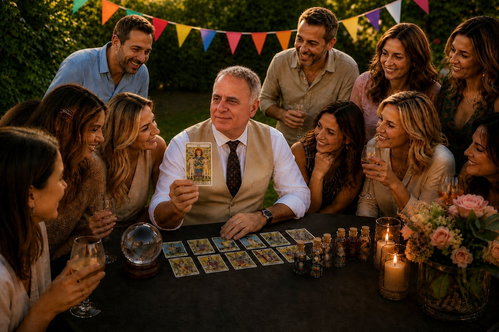

Intuition Hub (Corporate)
L'intuizione è la forma più alta di intelligenza manageriale. Portiamo il metodo Jodorowsky nel cuore delle decisioni aziendali, dei retreat e dei team building d'eccellenza.
- Shadow Leadership Mapping
- Decision Making per Executive
- Workshop di Vision Strategica